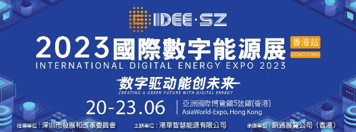

<?xml version="1.0" encoding="UTF-8"?><rss version="2.0"
	xmlns:content="http://purl.org/rss/1.0/modules/content/"
	xmlns:wfw="http://wellformedweb.org/CommentAPI/"
	xmlns:dc="http://purl.org/dc/elements/1.1/"
	xmlns:atom="http://www.w3.org/2005/Atom"
	xmlns:sy="http://purl.org/rss/1.0/modules/syndication/"
	xmlns:slash="http://purl.org/rss/1.0/modules/slash/"
	>

<channel>
	<title>訊通展覽公司</title>
	<atom:link href="" rel="self" type="application/rss+xml" />
	<link>https://www.paper-com.com.hk/en</link>
	<description>Paper Communication Exhibition Services</description>
	<lastBuildDate>Fri, 22 Nov 2024 04:22:32 +0000</lastBuildDate>
	<language>en-US</language>
	<sy:updatePeriod>
	hourly	</sy:updatePeriod>
	<sy:updateFrequency>
	1	</sy:updateFrequency>
	<generator>https://wordpress.org/?v=6.8.1</generator>

<image>
	<url>https://www.paper-com.com.hk/wp-content/uploads/2019/02/cropped-papercom-32x32.png</url>
	<title>訊通展覽公司</title>
	<link>https://www.paper-com.com.hk/en</link>
	<width>32</width>
	<height>32</height>
</image> 
	<item>
		<title>DMP Greater Bay Area Industrial Expo (Hong Kong)</title>
		<link>https://www.paper-com.com.hk/en/blog/dmpshow2023-hk/</link>
		
		<dc:creator><![CDATA[papercom]]></dc:creator>
		<pubDate>Tue, 26 Mar 2024 03:35:16 +0000</pubDate>
				<category><![CDATA[Exhibition Schedule]]></category>
		<guid isPermaLink="false">https://www.paper-com.com.hk/?p=9211</guid>

					<description><![CDATA[　 　 DMP 大灣區工業博覽會•香港展示工業界驕人成就同期舉行創科論壇、創新發明展等多項活動 　 　　香港特区政府将致力推动创科发展，设立100亿元「产学研1+计划」，壮大人才库，建设智能香港，融入国家发展，打造香港成为国际创新科技中心。此外，政府已向创新及科技基金注资港币20亿元成立「再工业化资助计划」，为在香港设立智能生产线的制造商提供配对资助；在工业邨建立先进制造业设施，以鼓励更多高增值及高科技生产制造商在香港设立工厂。通过发展先进智能制造技术，实现香港再工业化，可减轻香港经济对服务业的依赖。 　 　　「讯通」凭借30多年筹办工业范畴展览会经验与各大专业协会紧密联系，已经成为香港与粤港澳大湾区的工业与经济发展的一道桥梁。「讯通」将于2023年6月20-30日会在香港亚洲国际博览馆，主办 “DMP大湾区工业博览会•香港” 展示主题包括创新科技，智能制造，再工业化等，并配合香港特区政府推动科研、招商引资引才、开拓青年视野。 展览范围 智能制造机械人焊接机器人、喷涂机器人、搬运机器人、装配机器人、智能仓储机器人及系统、驱动系统 传动及感应装置精密减速器、控制器、伺服电机、步进电机、夹具/抓手、气缸及液压缸、机器视觉系统及组件、直线运动/导轨设备、滚珠花键、滚珠丝杠和连杆球 工业自动化核心智能系统组装及搬运系统/线性定位系统、工业图像处理系统、工业用计算机通讯、网络和现场总线系统、嵌入式系统、传感器和执行器、工业测量和测试系统、工业自动化数据获取及辨别系统、激光技术、自动化服务、空压技术与设备 工业电气及机械零部件电气系统变压器、电池和不断电源、伺服电机和变频器、轴承、齿轮、联轴器等传动部件、机械驱动系统、电线及电缆附件/连接器、线束、电气控制系统用电气开关装置和设备、电工及光学部件、电力电工测试和检测设备，各类工厂自动化零部件等 　 主办单位 讯通展览公司 广东讯展会议展览有限公司 上海讯展会议展览有限公司 东莞讯通会议展览有限公司 深圳讯通展览有限公司 　 ]]></description>
										<content:encoded><![CDATA[<div align="center">
<div class="su-row">
<div class="su-column su-column-size-1-1"><div class="su-column-inner su-u-clearfix su-u-trim">
<div style="padding: 5px; background-color: #03A9F4; color: #ffffff; font-size: 20px;"><strong>场刊</strong></div>
</div></div>
</div>
<div class="su-row">
<div class="su-column su-column-size-1-2"><div class="su-column-inner su-u-clearfix su-u-trim">
<div align="center"></a></div>
</div></div>
<div class="su-column su-column-size-1-2"><div class="su-column-inner su-u-clearfix su-u-trim">
<div align="center"></a></div>
</div></div>
</div>
<div class="su-row">
<div class="su-column su-column-size-1-2"><div class="su-column-inner su-u-clearfix su-u-trim">
<div align="center"><a href="https://download.wezhan.cn/contents/sitefiles2046/10231185/files/706598..pdf?response-content-disposition=inline%3Bfilename%3D%25e6%25b7%25b1%25e5%259c%25b3%25e5%258c%25bb%25e7%2596%2597%25e5%2599%25a8%25e6%25a2%25b0%25e5%25b1%2595-%25e9%25a6%2599%25e6%25b8%25af%25e7%25ab%2599%25e7%2594%25b5%25e5%25ad%2590%25e4%25bc%259a%25e5%2588%258anew%281%29%282%29.pdf&#038;response-content-type=application%2Fpdf&#038;auth_key=1711442989-b131325a9a244e1e9a4e7c8ecb72904d-0-1ce53568a709c196e552a107d51250d3" target="_blank" rel="noopener"></a></div>
</div></div>
<div class="su-column su-column-size-1-2"><div class="su-column-inner su-u-clearfix su-u-trim">
<div align="center"></a></div>
</div></div>
</div></div>
<p>　</p>
<div align="center"></div>
<p>　</p>
<div align="center">
<h4>DMP 大灣區工業博覽會•香港展示工業界驕人成就<br />同期舉行創科論壇、創新發明展等多項活動</h4>
</div>
<p>　<br />
　　香港特区政府将致力推动创科发展，设立100亿元「产学研1+计划」，壮大人才库，建设智能香港，融入国家发展，打造香港成为国际创新科技中心。此外，政府已向创新及科技基金注资港币20亿元成立「再工业化资助计划」，为在香港设立智能生产线的制造商提供配对资助；在工业邨建立先进制造业设施，以鼓励更多高增值及高科技生产制造商在香港设立工厂。通过发展先进智能制造技术，实现香港再工业化，可减轻香港经济对服务业的依赖。<br />
　<br />
　　「讯通」凭借30多年筹办工业范畴展览会经验与各大专业协会紧密联系，已经成为香港与粤港澳大湾区的工业与经济发展的一道桥梁。「讯通」将于2023年6月20-30日会在香港亚洲国际博览馆，主办 “DMP大湾区工业博览会•香港” 展示主题包括创新科技，智能制造，再工业化等，并配合香港特区政府推动科研、招商引资引才、开拓青年视野。</p>
<h4>展览范围</h4>
<ul>
<li><strong>智能制造机械人</strong><br />焊接机器人、喷涂机器人、搬运机器人、装配机器人、智能仓储机器人及系统、驱动系统</li>
<li><strong>传动及感应装置</strong>精密减速器、控制器、伺服电机、步进电机、夹具/抓手、气缸及液压缸、机器视觉系统及组件、直线运动/导轨设备、滚珠花键、滚珠丝杠和连杆球</li>
<li><strong>工业自动化核心智能系统</strong><br />组装及搬运系统/线性定位系统、工业图像处理系统、工业用计算机通讯、网络和现场总线系统、嵌入式系统、传感器和执行器、工业测量和测试系统、工业自动化数据获取及辨别系统、激光技术、自动化服务、空压技术与设备</li>
<li><strong>工业电气及机械零部件</strong><br />电气系统变压器、电池和不断电源、伺服电机和变频器、轴承、齿轮、联轴器等传动部件、机械驱动系统、电线及电缆附件/连接器、线束、电气控制系统用电气开关装置和设备、电工及光学部件、电力电工测试和检测设备，各类工厂自动化零部件等</li>
</ul>
<p>　</p>
<h4>主办单位</h4>
<ul>
<li>讯通展览公司</li>
<li>广东讯展会议展览有限公司</li>
<li>上海讯展会议展览有限公司</li>
<li>东莞讯通会议展览有限公司</li>
<li>深圳讯通展览有限公司</li>
</ul>
<p>　<br />
<br />Widget not in any sidebars<br /><span data-mce-type="bookmark" style="display: inline-block; width: 0px; overflow: hidden; line-height: 0;" class="mce_SELRES_start"></span><span data-mce-type="bookmark" style="display: inline-block; width: 0px; overflow: hidden; line-height: 0;" class="mce_SELRES_start"></span><span data-mce-type="bookmark" style="display: inline-block; width: 0px; overflow: hidden; line-height: 0;" class="mce_SELRES_start"></span><span data-mce-type="bookmark" style="display: inline-block; width: 0px; overflow: hidden; line-height: 0;" class="mce_SELRES_start"></span><span data-mce-type="bookmark" style="display: inline-block; width: 0px; overflow: hidden; line-height: 0;" class="mce_SELRES_start"></span></p>
]]></content:encoded>
					
		
		
			</item>
		<item>
		<title>廣州精穩工業製品有限公司</title>
		<link>https://www.paper-com.com.hk/en/blog/booth23-5a16/</link>
		
		<dc:creator><![CDATA[papercom]]></dc:creator>
		<pubDate>Wed, 28 Jun 2023 10:00:43 +0000</pubDate>
				<category><![CDATA[DMPhk Exhibitors Link & Preview]]></category>
		<guid isPermaLink="false">https://www.paper-com.com.hk/?p=8661</guid>

					<description><![CDATA[Guangzhou Jingwen Hardware Co., Ltd., Referred To As "Jingwen Hardware", Was Founded In 2006.It Mainly Produces And Sells Industrial Hardware Structural Parts, Serves All Kinds Of Industrial Automation Equipment Manufacturers,And Supplies More Than 40,000 Different Styles Of Spot Goods (Including Draw Latches, Locks, Hinges, Leveling Mounts, Draw Locks, Handles, Magnetic Latches, Clamps, Slide-Bolt Latches,Car Accessories, Etc.) For Enterprises To Realise The One-Stop Purchase Of Product Accessories;Provide Small-Batch Product Improvement Customisation Based On Spot Goods And Customised Service Based On Design Drawings Or Samples, Manufacture Products That Meet Customer Installation And Use Standards According To Demand, And Accept Oem And Odm Product Entrustment.]]></description>
										<content:encoded><![CDATA[<p>Guangzhou Jingwen Hardware Co., Ltd., Referred To As &#8220;Jingwen Hardware&#8221;, Was Founded In 2006.It Mainly Produces And Sells Industrial Hardware Structural Parts, Serves All Kinds Of Industrial Automation Equipment Manufacturers,And Supplies More Than 40,000 Different Styles Of Spot Goods (Including Draw Latches, Locks, Hinges, Leveling Mounts, Draw Locks, Handles, Magnetic Latches, Clamps, Slide-Bolt Latches,Car Accessories, Etc.) For Enterprises To Realise The One-Stop Purchase Of Product Accessories;Provide Small-Batch Product Improvement Customisation Based On Spot Goods And Customised Service Based On Design Drawings Or Samples, Manufacture Products That Meet Customer Installation And Use Standards According To Demand, And Accept Oem And Odm Product Entrustment.</p>
]]></content:encoded>
					
		
		
			</item>
		<item>
		<title>Dunwell Technology (Holdings) Ltd.</title>
		<link>https://www.paper-com.com.hk/en/blog/booth23-5e25/</link>
		
		<dc:creator><![CDATA[papercom]]></dc:creator>
		<pubDate>Fri, 28 Jul 2023 07:34:42 +0000</pubDate>
				<category><![CDATA[DMPhk Exhibitors Link & Preview]]></category>
		<guid isPermaLink="false">https://www.paper-com.com.hk/?p=8725</guid>

					<description><![CDATA[With over 30 years of professional experience in providing technological environmental solutions.]]></description>
										<content:encoded><![CDATA[<p>With over 30 years of professional experience in providing technological environmental solutions, Dunwell&#8217;s services include:</p>
<ol>
<li>Providing water treatment solutions such as design and installation of industrial wastewater treatment and sewage treatment and reuse system;</li>
<li>Providing lubricating oil related technologies such as re-refining / recycling of used lubricant oil, blending of lubricant oil products and analysis service as a preventive maintenance measure;</li>
<li>Providing Cleaner Production Assessment and Demonstration projects to help PRD factories to reduce their pollution emissions;</li>
<li>Providing energy, water and indoor air quality audits, consultations and technical solutions to enhance companies&#8217; energy / water saving and efficiency and</li>
<li>Collecting and treating wastes such as wastewater, oily contaminated wastewater, used oil, used rechargeable batteries and other chemical wastes.</li>
</ol>
]]></content:encoded>
					
		
		
			</item>
		<item>
		<title>深圳市朗宇芯科技有限公司</title>
		<link>https://www.paper-com.com.hk/en/blog/booth23-5e51/</link>
		
		<dc:creator><![CDATA[papercom]]></dc:creator>
		<pubDate>Thu, 27 Jul 2023 10:01:49 +0000</pubDate>
				<category><![CDATA[DMPhk Exhibitors Link & Preview]]></category>
		<guid isPermaLink="false">https://www.paper-com.com.hk/?p=8691</guid>

					<description><![CDATA[Shenzhen Langyuxin Technology Co., Ltd. Is An Enterprise Specializing In The Research And Development, Production, And Sales Of Motion Control Technology And Industrial Robot Related Products. The Products Include Industrial Robots/Robotic Arm Control Systems, Industrial Automation Control Systems, Servo Systems, And Other Industrial Core Components; It Is A National High-Tech Enterprise And A "Specialized, Refined, And Innovative" Enterprise In Guangdong Province.]]></description>
										<content:encoded><![CDATA[<p>Shenzhen Langyuxin Technology Co., Ltd. Is An Enterprise Specializing In The Research And Development, Production, And Sales Of Motion Control Technology And Industrial Robot Related Products. The Products Include Industrial Robots/Robotic Arm Control Systems, Industrial Automation Control Systems, Servo Systems, And Other Industrial Core Components; It Is A National High-Tech Enterprise And A &#8220;Specialized, Refined, And Innovative&#8221; Enterprise In Guangdong Province.</p>
<p>As A Professional Motion Control Solution Provider, Langyuxin Is Capable Of Providing Users With Professional Automation, Robot/Robotic Arm Control System Solutions In Industries Such As Injection Molding, Machine Tools, Punching Machines, Die-Casting, Glass, Spraying, And Palletizing.</p>
]]></content:encoded>
					
		
		
			</item>
		<item>
		<title>Sumitech Engineering Solutions Limited</title>
		<link>https://www.paper-com.com.hk/en/blog/booth23-6a23/</link>
		
		<dc:creator><![CDATA[papercom]]></dc:creator>
		<pubDate>Fri, 28 Jul 2023 04:31:33 +0000</pubDate>
				<category><![CDATA[DMPhk Exhibitors Link & Preview]]></category>
		<guid isPermaLink="false">https://www.paper-com.com.hk/?p=8700</guid>

					<description><![CDATA[Sumitech Specialize In Proivding Precision Parts Machining,Engineering Plastic Parts Machining,5-Axis Parts Machining,Metal Sheet Machining For Medical,Semiconductor, Aerospace, Energy, Auto, Communication ,Robot And Some Other Areas. We Can Also Provide One-Stop Modular Assembly Service.
In Order To Providing Better Quality, We Introduce Germany Dmg 5-Axis,America Hass 5-Axis, 4-Axis 3-Axis Machining Center, And Cnc Lathe, Grinding Machine, Milling Machine, Drilling Machine,Wire Cutting And To We Own Germany Imported Zeiss Contura G2.Vmc432, Height Gauge, Hardne Tester,Roughness Tester,Coating Tester,Hrc Hardness Tester High End Test Equipment To Meet All-Around Inspection Requirment.]]></description>
										<content:encoded><![CDATA[<p>Sumitech Specialize In Proivding Precision Parts Machining,Engineering Plastic Parts Machining,5-Axis Parts Machining,Metal Sheet Machining For Medical,Semiconductor, Aerospace, Energy, Auto, Communication ,Robot And Some Other Areas. We Can Also Provide One-Stop Modular Assembly Service.<br />
In Order To Providing Better Quality, We Introduce Germany Dmg 5-Axis,America Hass 5-Axis, 4-Axis 3-Axis Machining Center, And Cnc Lathe, Grinding Machine, Milling Machine, Drilling Machine,Wire Cutting And To We Own Germany Imported Zeiss Contura G2.Vmc432, Height Gauge, Hardne Tester,Roughness Tester,Coating Tester,Hrc Hardness Tester High End Test Equipment To Meet All-Around Inspection Requirment.</p>
]]></content:encoded>
					
		
		
			</item>
		<item>
		<title>东莞市翔鹭精密工具有限公司</title>
		<link>https://www.paper-com.com.hk/en/blog/booth23-6e06/</link>
		
		<dc:creator><![CDATA[papercom]]></dc:creator>
		<pubDate>Fri, 28 Jul 2023 06:28:40 +0000</pubDate>
				<category><![CDATA[DMPhk Exhibitors Link & Preview]]></category>
		<guid isPermaLink="false">https://www.paper-com.com.hk/?p=8706</guid>

					<description><![CDATA[广东翔鹭精密制造有限公司系广东翔鹭钨业有限公司的全资子公司，成立于2017年10月，拥有东莞市翔鹭精密工具有限公司及江西翔鹭精密制造有限公司两家全资子公司。翔鹭致力打造“集矿山开采，矿石冶炼，粉末生产，硬质合金，精密刀具制造”于一体的钨制品完整产业链、致力于标准产品的标准化制造及非标，异型产品研发，现拥有ANCA、WALTER、ROLLOMATIC等五轴数控刀具磨床55台，PVD表面涂层1台，ZOLLER刀具自动检测仪4台等生产主设备均从国外进口。打造集智能化，自动化于一体的生产先进线。]]></description>
										<content:encoded><![CDATA[<p>广东翔鹭精密制造有限公司系广东翔鹭钨业有限公司的全资子公司，成立于2017年10月，拥有东莞市翔鹭精密工具有限公司及江西翔鹭精密制造有限公司两家全资子公司。翔鹭致力打造“集矿山开采，矿石冶炼，粉末生产，硬质合金，精密刀具制造”于一体的钨制品完整产业链、致力于标准产品的标准化制造及非标，异型产品研发，现拥有ANCA、WALTER、ROLLOMATIC等五轴数控刀具磨床55台，PVD表面涂层1台，ZOLLER刀具自动检测仪4台等生产主设备均从国外进口。打造集智能化，自动化于一体的生产先进线。</p>
]]></content:encoded>
					
		
		
			</item>
		<item>
		<title>Bluwhale Ceramic Technology Co., Limited</title>
		<link>https://www.paper-com.com.hk/en/blog/booth23-6e16/</link>
		
		<dc:creator><![CDATA[papercom]]></dc:creator>
		<pubDate>Fri, 28 Jul 2023 06:35:44 +0000</pubDate>
				<category><![CDATA[DMPhk Exhibitors Link & Preview]]></category>
		<guid isPermaLink="false">https://www.paper-com.com.hk/?p=8713</guid>

					<description><![CDATA[科众陶瓷是一家专业的精密陶瓷产品供应商，具有精密陶瓷产品研发、成型、烧结、加工、检测一整套完整的精密陶瓷产品生产能力，可按客户需求来图、来样定制生产各种精密陶瓷产品。主要生产氧化锆、氧化铝、氮化硅、碳化硅、氮化硼、氮化铝、ZTA等工业陶瓷材料。科众陶瓷是一家产、销一体化的企业，旗下香港公司拥有进出口权，生产工厂位于有“世界工厂”之称的东莞，拥有掌握成熟精密陶瓷产品生产工艺的技术人才。客户主要分布在中国大陆、中国香港、中国台湾、日本、韩国、印度、新加坡、马拉西亚、澳大利亚、加拿大、德国、美国等国家地区，生产的精密陶瓷产品被广泛应用于量具、泵阀、锂电池、半导体、电子电器、智能穿戴、激光、石油、化工、医疗、食品、光伏、军工、航空航天等行业领域。]]></description>
										<content:encoded><![CDATA[<p>　　科众陶瓷是一家专业的精密陶瓷产品供应商，具有精密陶瓷产品研发、成型、烧结、加工、检测一整套完整的精密陶瓷产品生产能力，可按客户需求来图、来样定制生产各种精密陶瓷产品。主要生产氧化锆、氧化铝、氮化硅、碳化硅、氮化硼、氮化铝、ZTA等工业陶瓷材料。科众陶瓷是一家产、销一体化的企业，旗下香港公司拥有进出口权，生产工厂位于有“世界工厂”之称的东莞，拥有掌握成熟精密陶瓷产品生产工艺的技术人才。客户主要分布在中国大陆、中国香港、中国台湾、日本、韩国、印度、新加坡、马拉西亚、澳大利亚、加拿大、德国、美国等国家地区，生产的精密陶瓷产品被广泛应用于量具、泵阀、锂电池、半导体、电子电器、智能穿戴、激光、石油、化工、医疗、食品、光伏、军工、航空航天等行业领域。</p>
<p>　　今后将进一步发挥自身的在产品质量、成本控制和交期上的优势，进一步拓展全球市场，为全球企业继续提供优质的精密陶瓷产品与服务。</p>
<p>　　科众陶瓷拥有ISO9001-2015质量管理认证证书，采取ISO、ERP及自创的四重品质管理机制，在产品生产过程中严格执行当前工艺自检，下个生产环节对上个生产环节的结果复检，出厂产品整体品检，问题产品进行在线质量管理系统登记并分析原因及找出解决方案，避免二次出现问题，提供良品率，实现出厂产品100%符合客户要求的最终目标。</p>
]]></content:encoded>
					
		
		
			</item>
		<item>
		<title>Dongguan Kaibao Precision Machinery Co., Ltd.</title>
		<link>https://www.paper-com.com.hk/en/blog/booth23-6e19/</link>
		
		<dc:creator><![CDATA[papercom]]></dc:creator>
		<pubDate>Fri, 28 Jul 2023 06:55:29 +0000</pubDate>
				<category><![CDATA[DMPhk Exhibitors Link & Preview]]></category>
		<guid isPermaLink="false">https://www.paper-com.com.hk/?p=8715</guid>

					<description><![CDATA[Dongguan Kaibao Precision Machinery Co., Ltd. Was Established In 2009, Located In Dongguan Guangdong，Mainly Produces Pneumatic Sanders , Electronic Sanders，Air Polisher，Electronic Polisher Air Angle Grinders,Air Die Grinders, Air Die Grinding Pens Professional Automated Manipulators Polishers And Sanding Backup Pads. Most Of Our Products Are Export To Europe,North America,Asia,Australia.]]></description>
										<content:encoded><![CDATA[<p>Dongguan Kaibao Precision Machinery Co., Ltd. Was Established In 2009, Located In Dongguan Guangdong，Mainly Produces Pneumatic Sanders , Electronic Sanders，Air Polisher，Electronic Polisher Air Angle Grinders,Air Die Grinders, Air Die Grinding Pens Professional Automated Manipulators Polishers And Sanding Backup Pads. Most Of Our Products Are Export To Europe, North America, Asia, Australia.</p>
<p>We Have Our Brand “Pandas” And “Super” That Are For Air Sanders That Are Well Received By Our Customers.</p>
]]></content:encoded>
					
		
		
			</item>
		<item>
		<title>广州方川润滑科技有限公司</title>
		<link>https://www.paper-com.com.hk/en/blog/booth23-6e21/</link>
		
		<dc:creator><![CDATA[papercom]]></dc:creator>
		<pubDate>Fri, 28 Jul 2023 07:05:45 +0000</pubDate>
				<category><![CDATA[DMPhk Exhibitors Link & Preview]]></category>
		<guid isPermaLink="false">https://www.paper-com.com.hk/?p=8719</guid>

					<description><![CDATA[Fanchu Lubricant Technology Co,Ltd Is Located In The Development Zone Of Guangzhou Industrial District. The Company Was Established In July 2005,Covers An Area Of 20000 Square Meters. We Are Certified By Iso-9001,Iso-14001, Iso-45001,Sgs And Rohs. Fanchu Lube Is The Member Of Stle, And Also One Of The Standing Directors Of China Surface Engineering Association.In Addition,We Have Cooperated With Universities To Set Up Enterprise Technology Center And Practice Bases. Moreover, We Provide A Full Range Of Technical Support And Professional Guidance To Clients.]]></description>
										<content:encoded><![CDATA[<p>Fanchu Lubricant Technology Co,Ltd Is Located In The Development Zone Of Guangzhou Industrial District. The Company Was Established In July 2005,Covers An Area Of 20000 Square Meters. We Are Certified By Iso-9001,Iso-14001, Iso-45001,Sgs And Rohs. Fanchu Lube Is The Member Of Stle, And Also One Of The Standing Directors Of China Surface Engineering Association.In Addition,We Have Cooperated With Universities To Set Up Enterprise Technology Center And Practice Bases. Moreover, We Provide A Full Range Of Technical Support And Professional Guidance To Clients.</p>
]]></content:encoded>
					
		
		
			</item>
		<item>
		<title>中科彼特（杭州）生物科技有限公司</title>
		<link>https://www.paper-com.com.hk/en/blog/booth23-6e25/</link>
		
		<dc:creator><![CDATA[papercom]]></dc:creator>
		<pubDate>Fri, 28 Jul 2023 07:56:04 +0000</pubDate>
				<category><![CDATA[DMPhk Exhibitors Link & Preview]]></category>
		<guid isPermaLink="false">https://www.paper-com.com.hk/?p=8727</guid>

					<description><![CDATA[Cas Peter (Hangzhou) Biotechnology Co., Ltd Is A High-Tech Enterprise. In Order To Promote Scientific Research In The Field Of Smart Medicine And Intelligent Manufacturing And Promote The Development Of High-Tech Economic Industry, We Together With The Chinese Academy Of Sciences(Cas) And Hangzhou Advanced Technology Institute Jointly Established The Cas Peter Nanometer Research Institute. And Jointly Developed The Pt Series Nano Preparation: High-Pressure Homogenizer, Hot Melt Extruder, High-Speed Shear Disperser, Liposome Extrusion System, Graphene Dispersion Equipment, Microsphere Preparation Equipment, Etc.]]></description>
										<content:encoded><![CDATA[<p>Cas Peter (Hangzhou) Biotechnology Co., Ltd Is A High-Tech Enterprise. In Order To Promote Scientific Research In The Field Of Smart Medicine And Intelligent Manufacturing And Promote The Development Of High-Tech Economic Industry, We Together With The Chinese Academy Of Sciences(Cas) And Hangzhou Advanced Technology Institute Jointly Established The Cas Peter Nanometer Research Institute. And Jointly Developed The Pt Series Nano Preparation: High-Pressure Homogenizer, Hot Melt Extruder, High-Speed Shear Disperser, Liposome Extrusion System, Graphene Dispersion Equipment, Microsphere Preparation Equipment, Etc.</p>
<p>The Equipment Is Widely Used In Domestic Major Scientific Research Institutions And Pharmaceutical Enterprises.</p>
<p>Application Field Include: Biological Industry (Protein Drugs, Testing Reagents, Enzyme Engineering, Human Vaccines, Veterinary Vaccines, Etc.), Pharmaceutical Industry (Fat Emulsion, Liposomes, Nanoparticles, Microspheres, Etc.), Food Industry (Beverages, Milk, Food Additives, Etc.), Chemical Industry (New Energy Batteries, Nano Cellulose, Coating And Papermaking, Polymer Materials, Etc.).</p>
]]></content:encoded>
					
		
		
			</item>
	</channel>
</rss>
